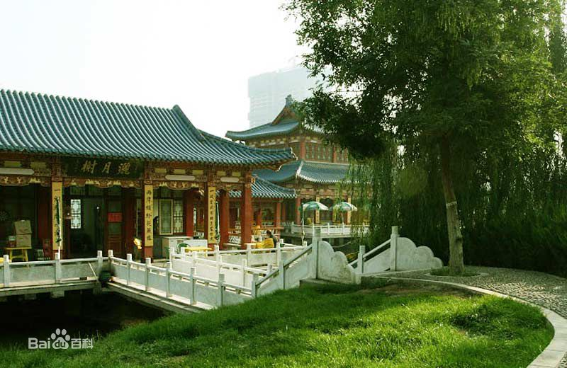

雁滩公园
雁滩公园位于甘肃省兰州市东北隅，原是黄河中的十八个沙岛，因早年常有大雁在此栖息而得名。1958年修筑成20公里的环滩大坝和柏油马路，穿过黄河滩上支流三条，河滩乃与市区连成一体，园内辟有人工湖。后辟为雁滩公园、游泳池，为兰州的游览胜地之一。雁滩公园是一处以湖光水色、花草果木而著称的田园式公园。雁滩公园位于兰州市东郊雁滩滩尖，是在1956年兴建的一个河畔公园。雁滩，由18个大小不等的河心沙岛组成，旧称“十八家东滩”，即段家滩、傅家滩、均家滩、李家滩、张家滩、苏家滩、杨家滩、宋家滩、刘家大滩、刘家小滩、大雁滩、小雁滩、南面滩、北面滩、骆驼滩、滩尖子、船滩、高滩。原先，这里河道
纵横，芦苇丛生，树木成荫，百乌争鸣，南来北往的大雁常来此地栖息，故有此名。“雁滩飞雁”曾被地方史志列为兰州胜景。 现在的雁滩是各滩不断淤积扩大，逐渐连成一片，统称为雁滩。原来各滩，各留其名，相沿至今。雁滩面积不大，兀立河心，堪称弹丸之地，但绿荫掩蔽、盛产蔬菜、水果，极为富庶。1949年前的雁滩，有黄河阻隔，往来游人主要造羊皮筏子摆渡，既不安全，又不方便。
建国后，雁滩经过规划，不断得到改造。20公里的环滩大坝和柏油马路，与市区连成一片。滩上开辟雁滩公园和游泳池。在公园建设中，人们填平沼泽、水洼，挖掘了长700米、宽80米的人工湖，湖边高堤上修建了长厅。渠水从厅前流过，清风习习，凉爽宜人。湖四周植有各种树木，枝条飘摆，倒映水中，波动影移，情趣盎然。湖中备有各式游船，供游人泛舟。湖的北面，设有图书馆、阅览室、茶园、小卖部和花房，陈设典雅。湖东边的游泳池，每当盛夏秋初，招徐更多的游人，热闹非常。 现在，雁滩公园正以十倍于今的规模进行扩建。雁滩公园南湖区正以更加丰富多彩的面貌出现在游人面前。
